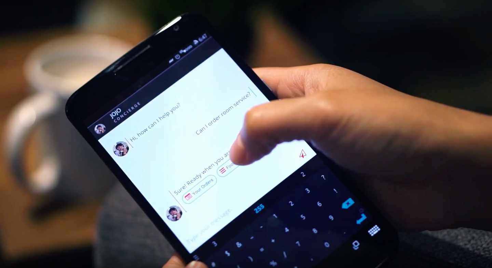

JOJO
A chatbot that handles questions and requests from customers in order to streamline business communications and operations
Project Type
chatbot system
conversational interface
Client
A Fortune 500 company
Roles
interaction designer
front-end web dev
UX researcher
Team
Jaskirat Sr
Myles Coolen
Timeframe
July 2016 - March 2017
JOJO is a chatbot system that handles questions/requests from customers and streamlines business communications and operations built for a Fortune 500 telecommunications company.
To comply with my non-disclosure agreement, I have omitted and obfuscated confidential information in this case study. The information in this case study is my own and does not necessarily reflect the views of my employer/client for this project.
Challenge
As with many big telecommunication companies, this one is just beginning to explore the wide variety of uses for artificial intelligence/machine learning and the ways that it might build on existing assets within their consumer-facing and enterprise business arms. While much of the engineer expertise exists within the business ecosystem, part of the challenge of this emerging technology is crafting concrete use-cases that fit within the existing business goals.
Goal
Our team’s goal was to come up with and build working prototypes of chatbots that could provide new services and opportunities for the company and its customers/clients. JOJO is a chatbot system that handles questions/requests from customers and streamlines business communications and operations. The system is built in a modular way, so that the four major components - conversational UI, artificial intelligence, operations dashboard, and analytics - can be pulled out and rearranged for applicability across multiple industries and for many different use-cases.

Focusing on the company’s existing industry connections, we developed JOJO as part of a complete system for the hospitality industry that would augment existing hardware/network sales. In the next few months, we’re aiming to incorporate the system into a small geo-fenced ad campaign for the company’s retail branch, as a way to provide a more active way of getting new customers into nearby Verizon stores. Throughout the development process we sought to tie the bot to existing department’s work and continue to build support for the project internally.
Product Design Process
The product development process incoporated industry and customer research (interviews, observation, and market research surveys), outlining specific use-cases, mapping out the conversation and user experience flows, researching and architecting the technical system, coding and training the scripts for the bot intent recognition and responses, and getting internal buy-in.
My Role
My contribution to the project included a mix of UX design, technical prototyping, and product positioning. I led much of the service design work - creating service blueprints, sequence diagrams, annotated wireframes - as well as the content strategy - crafting dialog trees and structuring the intents and entities in the botframe work. I collaborated with another designer on the visual design of the user interfaces, which included the mobile conversational UI plus a mission control dashboard and an analytics page (for the hospitality vertical). On the technical side, I did a lot of the bot scripting (coding the conversation waterfall and specific bot responses) and training, as well as provided engineering support on the web application front end to our primary tech specialist.